Transformer representations for astronomical light curves.
These resources include the original model, datasets and tutorials. For Astromer 2, contrastive learning and recent light-curve research, explore the updated publication inventory ↗.

ASTROMER is a Transformer-based model that creates light curves representations. The learned representation can be easily adapted to other surveys by re-training ASTROMER on new sources. Read the paper for a better understanding.